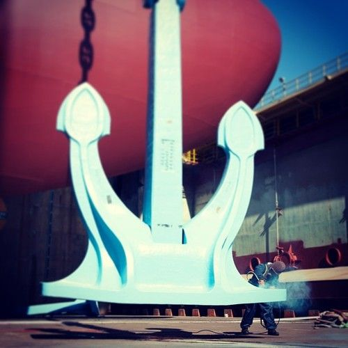
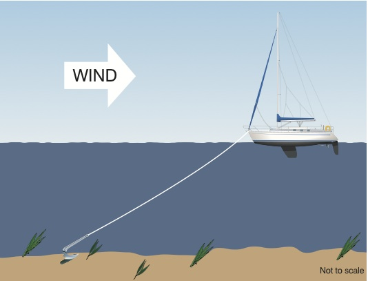
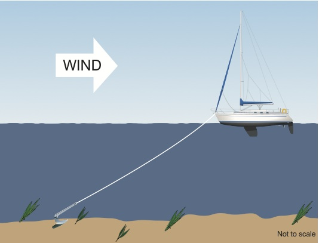

Hello guys! welcome to my blog page.This blog is for know some intresting facts about ships.
After read the heading you are think about there is an ship in an middle sea and some story is being of the ship.But, no i am talk about the some intresting fact about the cargo ships.
90% Oceans mode of transport is use for trade done by the ships to carry cargo.
such as agri-products (wheat, maize, soya, etc.), coal, iron ore or for wet bulk products such as crude oil and petroleum.
You can see the comapare the size of ships according to types of ships:

The largest conatiner ships can carry upto 24,000 TEU(One TEU = One 20-foot container) speed up to 25knots(46 km/h).
Container of ships basically two standard size known as 20 or 40(-feet equivalents units).
There are many factors to calculate the consumption of fuels.Such as Speed,Distance,Size,Engine etc.
But,on average the daily consumption of fuel is if a containership of around 8,000 TEU would consume about 80 tons of bunker fuel(9,600 litres) per day at 24 knots(44.5 km/h)
The ships are not filled tank full with the fuel because,then they need to less amount of cargo to be loaded.They are calculate how much fuel we need to going to destination or any sides of the city of the country so,they can easily refuel her ships in the open sea without going to any ports.
You can see below refuling of ships at the middle of the sea

No! There are no brakes on thip so they can stop the ships instantly.
They are stop the ships by start moving the propeller in opposite direction to decrease their velocity of the ships.There is no need of brakes like vechiles because there are no such traffic in the sea and no ship comes simulataneous at the front of her.
There is one more way to stop the ships is Drop the anchor,but this way you cannot apply any of the region of the ships.Such as he if the depth of the sea is much more then they cannot drop the anchor because they have limited ropes to attach with the ships.
Here you can see the how anchor are huge and how they works.
 

There are such reasons why headlamp is not on the ships.
There is no need of healights to the ships because there is infinite distance you can see from the ship in the oceans and there is such no lights who can illuminate all the ships around you at the such at finite distance.
We want headlights for to identify the routes or pheripheral of the routes.But in this case routes are choosen by the using GPS and there is no pheripheral of the sea routes when you are not on bank of the sea.
The second one reason is the when you project the headlamp to another ship
They use lights for self illuminating to it.These light are visible approximately up to 6 miles(~10 km).They use different color of lights which means has will define all over the world same meaning.
The different color of lights are defines:
If any bank of the oceans or islands then there a light house which revolve 360°.Which is generally yellow/white in color.
There is an emergency signals if the engine is fail at the middle of the sea called Not under Command light.This light actually means that the ship is not under the control they drift automatically by the current of the sea water or you can say by the winds.There are two light which is red in color blink at some frequency.
Thanks! for reading my blog sincerely.